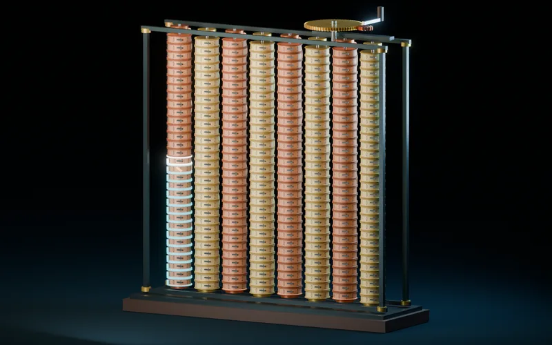

第1室
動く機械
中で何が起きているのかを、回して、切って、分解して見る部屋です。
-

-

-

1-03
バベッジの階差機関 No.2
題材: 1846〜49年に設計された計算機（計算部の実機は1991年に完成）
クランクを回すと、248個の数字の輪が足し算と繰り上げを行って、多項式の表を1行ずつ出していきます。
-

PLAYGROUND ・ 小さな展示館
AIと一緒に作った模型や小さな作品を置いている、ブラウザの中の展示館です。
第1室
中で何が起きているのかを、回して、切って、分解して見る部屋です。

1-03
題材: 1846〜49年に設計された計算機（計算部の実機は1991年に完成）
クランクを回すと、248個の数字の輪が足し算と繰り上げを行って、多項式の表を1行ずつ出していきます。